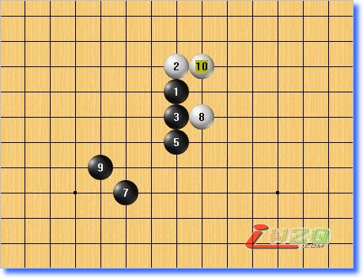
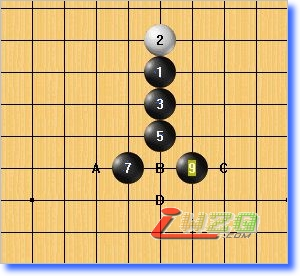

五子剑系列讲座之三【五子棋初级】
#1 五子剑系列讲座之三【五子棋初级】 作者：有志青年 发表时间：2007-12-8 14:11:39
注：五子剑五子棋系列讲座教程出自掌棋盟论坛，版权归原作者本人及掌棋盟论坛所有，未经许可，请勿私自转载。爱五子棋网站已获授权。
下棋这几年，飘飘零零的真正踏实在下棋的时间并不多，利用空闲的几天写下个人的一些经
验，希望可以对棋友有所帮助！
我认为下棋最重要的是态度和方法，你对五子棋的热爱程度以及学棋时所用的方法是提高
的关键！
阅读的顺序为：
五子棋初级→五子棋初级花月→五子棋初级蒲月→五子棋初级习题→
五子棋中级→五子棋中级云雨月→五子棋中级寒星→五子棋中级银月→五子棋中级习题→
五子棋ＶＣＦ习题集→五子棋高级
所有截图画面是ＬＩＢ、五子妙手３.０、ＱＱ游戏五子棋单机版能有如此多的人爱好
五子棋是最令人高兴的事，如此多的人为了同一种游戏来交流甚至痴迷！
感谢所有下五子棋的朋友，祝大家笑口常开、一生平安！
棋友：五子剑
#2 八卦阵 作者：有志青年 发表时间：2007-12-8 14:13:55
八卦阵是一种马步的走法，形成不败的防守力量，对方无论如何也无法连成四个子！看下面的对局：
可以看出黑棋始终没有机会，我们把里面的黑子去掉，只留下白子，再看下图：

这时大家就可以看出来，这是一个很奇妙的走法，空隙永远只有４个，只要占不到八卦点上，永远都只有４个子！
这就是八卦阵！
八卦阵是个防守招，完全没有进攻的力量，但是在很多情况下马步防守都是最强的防守点！
#3 禁手的认识： 作者：有志青年 发表时间：2007-12-8 14:19:21
禁手的认识：
因为五子棋自身的缘故，黑棋在开局时多一子所占有的优势实在太大，因此为削弱黑方的优势，特别制定黑方不可使用３３，４４，长连的战术，以达到黑白双方的平衡！
一、黑棋３３禁手
３３的意思是黑棋一子落下去时同时形成两个或两个以上的活三！这样的点黑方是不可以走的！如下图：（红叉显示点）
请注意是一子落下去形成３３，如果是分两次落子则不算禁手，如下两图：
也就是说，先后形成的３３是不算禁手的，必须一子形成！
二、黑棋４４禁手
４４的意思就是黑棋一子落下去时同时形成两个或两个以上的冲４！这样的点黑方也是不可以走的！如下两图：（字母显示点）
同样的，４４也必须是一子落下去同时形成双四，不可先后形成！
这里再强调一下的是，四三三，四四三等，都归入三三，四四禁手！也就是说，黑方只要有两个三或两个四，就算禁手！如下图：（红叉显示点）
三、黑棋长连禁手
长连也叫超五，意思是一条直线上连的子超过五个形成六个或六个以上，这在黑方是不允许的！如下图：（红叉先面点）
以上３种禁手都是为了控制黑棋先手的优势，白可以通过任意手段连五，超五也按连五算，同时白棋也可强迫黑棋走禁手点以取得胜利，称为追下取胜！
#4 特殊的双三 作者：有志青年 发表时间：2007-12-8 14:22:02
在入门的时候我们看过眠三的形式，其中有一些眠三看起来很象活三，可事实上却无法形成活四，所以也属于眠三的一种！如下图：
禁手３３的意思是同时形成两个活三！所以假活三通常会使人产生错觉！下面看看一些貌似禁手其实不是禁手的形状，如下列图：（字母显示点）
假禁手黑棋自然是可以下的，下棋时识别这样的点是最基本的能力！
#5 双禁手： 作者：有志青年 发表时间：2007-12-8 14:24:07
黑棋因为有了禁手的限制，则白棋可以在下棋时利用这一限制来赢棋，双禁手是在下棋时比较经典的局面，是我们必须学习掌握的！如下图：

黑开蒲月，７手后做棋，给白方机会！看下图：

白棋同时抓黑两个３３禁手点，胜定！
所以黑棋在下棋时一定要注意，要时刻计算是否有可能给对方抓禁手的机会！
#6 黑棋的“四三” 作者：有志青年 发表时间：2007-12-8 14:26:52
前面我们都已经了解了，黑棋不可以走３３，４４，长连！如此一来，黑棋唯一可以取胜的手段就只剩下４３！即一子落下形成一个冲４，且形成一个活三，同时创造两个先手以取得胜利！
最开始的时候我们就先看了活三和冲４的各种形状，把其中的一种四和另一种三组合起来，就形成四三，形状所谓五花八门！
前面之所以要那么细致的把各种形状都描述出来，就是为了更好的认识组合起来的图形！这里发几个看看，如下图：
我们在下棋的时候，对方不可能让我们直接去同时走２个先手，所以通常我们都连续进攻，也就是ＶＣＴ或者ＶＣＦ等，所以在下棋的时候要练习点的联系和线路的联系！如下图：
黑棋现在活三，然后再Ａ，Ｂ后形成一个四三杀！
四三杀的认识和熟练掌握是初级阶段重要的功课！
#7 做杀的技巧： 作者：有志青年 发表时间：2007-12-8 14:30:35
上节说了，黑棋赢棋主要靠的就是四三胜，那么黑在下棋时要注意运用做杀的技巧，先看下面的图：

现在看这个棋，黑有一个免三，可以形成攻击手段，假设我们选择跳冲来进攻，如下图：
走完以后成为这个样子！下面就要提到我们说的做杀的技巧，看看我们会有什么样的好处！看下图：

有什么感想吗？这就是做杀的技巧！做杀的意思也就是走一手棋，在下一手或几手后将形成四三杀。
我们看一个具体的棋局，大家看看如何取胜！这里就用到了刚才讲的做杀的技巧！如下图：
大家仔细看看这个黑如何胜，相信你会对做杀有更深刻的体会！
做杀的好处：
１、对方防守不干净，保留了进攻力量
２、防守的可选择点增加，对方出现失误几率增加
３、己落一子，敌增一兵，自己的棋不冲开，则对方的子力也少，这样进攻起来路线更开阔，同时对方的防守力量也弱
有四不冲，变化无穷！
除非冲４迫不得已，或者冲４的点是必争的要点，请保留眠三！
#8 双杀的技巧： 作者：有志青年 发表时间：2007-12-8 14:31:43
所谓双杀，于是是这一手落下去后同时形成两套可以胜的路线，我们看个简单的例子，如下图：
黑棋下一手可以在Ａ点直接形成４３，同时还可以在Ｂ，Ｃ点后在Ｃ点形成４３，所以黑形成２套杀路，从而胜定！
双杀也是初级所要学的最基本的技巧，在下棋时要可以找出巧妙的双杀点，重点在于你对基本形状的认识以及路线的连接性！
双杀的技巧在后面的开局讲解中会继续深入讲解，这里先有一个大概的印象！
#9 棋型的学习： 作者：有志青年 发表时间：2007-12-8 14:33:03
在初级学习的时候，请注重了解一些棋型知识，一些棋型通常都是大优或者必胜的，下棋时创造出优势以至到胜势是需要这些简单的棋型知识的！如下图：
上面这个就是寒星开局的燕阵！目前是黑必胜的局面！
棋型有很多，掌握的越多对下棋的帮助也就越大，在后面的开局讲解中我们再仔细学习！
#10 初级的防守内容： 作者：有志青年 发表时间：2007-12-8 14:35:22
１、一条线上的防守
也就是说首先要能找出对方在一条线上的攻击性所有防守点，主要是三的部分，这些内容在入门时讲解的很详细，忘记了就返回去再看！
２、两条及两条以上线上的防守
也就是比如对方在做杀的时候，这时会有很多的防守点，必须先可以找出所有的防守点。如下图：（字母显示点）

对方做杀后，有４个防守点，首先你要能找出这４个防守点！任何两条或两条线路以上的进攻都是单线上组合起来的，所以只要掌握基本的单线图形就可以很轻松的找全所有的直接防点！
同时在没有外子的情况下，直接破坏掉所有线路的点为最强点，但是放在具体的棋局里则要根据具体情况而定，这也就是要能找出所有防点的意义所在！
３、简单的反先防守
利用反先来进行防守，看下图：
当黑在Ａ点成４３时，白在Ｂ点防守后先成活四，从而达到反先的目的，破坏了黑棋事先的进攻路线。
下面出个习题，大家仔细看看白棋到底有多少个防守点，只要防守住黑下一手的４３杀就可以，如下图：
大家看看目前白有多少个防守点，在下一节公布答案！
#11 防守（续） 作者：有志青年 发表时间：2007-12-8 14:38:19
好，现在看看上节那道习题的答案！
你全找到了吗？呵呵
具备找全防守点的能力可以增强你算力中的宽度！在初级阶段我们还不具备很快找出强点的能力，所以地毯式的学习方法可以使我们事半功倍！
而通常的秒手也都是一些不容易被发现的点，初期的基本功是后期进步的坚实基础！
#12 初级水平的要求： 作者：有志青年 发表时间：2007-12-8 14:39:07
１、完全理解三、四、三三、四四、四三、禁手等棋型２、熟练掌握做杀，双杀，简单的ＶＣＴ，ＶＣＦ等技巧
３、了解大部分的有利棋型
４、培养出一定的棋感，可以直觉的感受到棋的优势程度
５、基本可以找到局部的一些防守强点，可以很迅速的找出棋盘上的要点
#13 初级爱好者如何提高？ 作者：有志青年 发表时间：2007-12-8 14:40:05
前面说了很多，然而你这么看一遍下来的话，你除了在脑子里有了一个新的概念以外，你还是你！五子棋作为智力博奕游戏，进步并非一朝一夕的事，需要我们用心去学习和感受，才可以体会到其中的乐趣！
如果看了前面的内容，你还想继续学习的话，如果你想好好玩这个游戏，那么我告诉你下好棋最关键的秘诀！
你一定是真的喜欢下五子棋！！！
这是你进步的唯一的最大的力量！无论你在下五子棋时得到了怎样的乐趣，喜欢它的哪一部分，都一定要有你喜欢的地方，只要你是真的喜欢，我保证，你一定可以下好！
兴趣可以使你在下棋时进步神速，同时在正确的方法指引下，充分享受五子棋的乐趣是一件美妙的事 情！
在初期，我们接触五子棋并不是很多，对棋盘是没有太大的感觉的。所以首先就是要先熟悉最简单的单线，慢慢的熟悉到棋盘上所有的组合形状。
任何复杂的图形都是由简单的路线组合起来的，所以最基本的东西是你未来成长的坚实基础！
这里给大家提供三种提高的方法，当然结合起来用进步会更快，效果更佳：
１、检讨输的对局！
我们都知道失败是成功之母，如果失败了不检讨那下次你还是会失败，所以最重要的是检讨！
自己下完棋自己最清楚自己的思维过程，输的检讨一下，为什么会输，应该如何改良，同时也学习到了对方比自己好的走法！
２、地毯式学习花月蒲月开局
所谓地毯式，就是运用穷尽防守点的做法，自己把花蒲这两个必胜局的白所有防守点全部杀出来，做到只要拿黑无论白如何防守都可以必胜！
借助打谱软件，达到这个要求后，初级水平的要求就可以全部达到了！
３、多做习题
通过做习题也可以使我们得到提高，开拓我们的思路！这个是显而易见的！
大千世界，你我能共同爱好五子棋，并且认真去对待，这就是一种缘分，衷心希望对你有所帮助！谢谢！
#14 Re:五子剑系列讲座之三【五子棋初级】 作者：希冀 发表时间：2008-7-23 1:36:55
请问6楼讲黑的四三,第一张图最下面那个c点,怎么是四三呢?
［ 月明星稀 于 2011-6-27 14:37:22 时花20金币送鲜花一朵］
#15 Re:五子剑系列讲座之三【五子棋初级】 作者：萨塔 发表时间：2008-10-20 15:02:20
黑棋先走完23、25之间的点再走C就是了啊#16 Re:五子剑系列讲座之三【五子棋初级】 作者：我爱五子棋伯园 发表时间：2008-10-21 9:36:06
这样的讲解很到位，希望继续讲解，对以后帮助很大#17 Re:五子剑系列讲座之三【五子棋初级】 作者：望棋渐佳 发表时间：2008-10-23 10:58:23
请问用什么软件来地毯式的学习花月·蒲月开局？
#18 Re:五子剑系列讲座之三【五子棋初级】 作者：五指棋 发表时间：2009-1-17 2:46:00
感觉帮助很大#19 Re:五子剑系列讲座之三【五子棋初级】 作者：十八子 发表时间：2009-3-7 9:11:12
很棒啊！谢谢!
#20 Re:五子剑系列讲座之三【五子棋初级】 作者：棋神的伴读 发表时间：2009-8-14 13:07:10
那个做杀我怎么做不出来啊~~~~~~~#21 Re:五子剑系列讲座之三【五子棋初级】 作者：书云 发表时间：2009-9-24 10:57:07
做杀是在最下面黑子的下方吗？#22 Re:五子剑系列讲座之三【五子棋初级】 作者：何帅 发表时间：2009-11-3 1:01:40
讲的不错~~~#23 Re:五子剑系列讲座之三【五子棋初级】 作者：齐羽 发表时间：2009-12-8 13:22:45

#24 Re:五子剑系列讲座之三【五子棋初级】 作者：狐狸丶別荿精 发表时间：2010-2-26 17:16:38
请问一下，为什么4楼第三图的A点不是禁手呀#25 Re:五子剑系列讲座之三【五子棋初级】 作者：老婆爱五子连珠 发表时间：2010-3-27 23:13:47
谢谢，让我重新认识了五子棋！#26 Re:五子剑系列讲座之三【五子棋初级】 作者：不求闻达 发表时间：2010-6-3 21:41:57
那位大侠帮忙说下，那个作杀怎么杀出来啊#27 Re:五子剑系列讲座之三【五子棋初级】 作者：龙小小 发表时间：2010-6-4 20:03:47
很好哦
#28 Re:五子剑系列讲座之三【五子棋初级】 作者：不求闻达 发表时间：2010-6-4 23:10:19
终于把作杀提做出来了，应该放在下方眠三右下点上。#29 Re:五子剑系列讲座之三【五子棋初级】 作者：蓝剑萧风 发表时间：2010-6-30 18:36:38
I6。白只要不防斜二黑就向下活三，下一手冲四活三；防住斜二再J6双杀#30 Re:五子剑系列讲座之三【五子棋初级】 作者：网速太快 发表时间：2011-5-25 12:53:48
讲的很好...#31 Re:五子剑系列讲座之三【五子棋初级】 作者：董明 发表时间：2011-6-22 3:19:33
不错，我以前没仔细看，回头一看的确大有裨益，谢谢优质老师#32 Re:五子剑系列讲座之三【五子棋初级】 作者：冰之呢喃 发表时间：2011-7-29 16:20:02
这个是好东西，对新手很有帮助！好好学习一下！#33 Re:五子剑系列讲座之三【五子棋初级】 作者：二十六手 发表时间：2011-12-14 17:57:28
求教何解？4.3杀那点？
#34 Re:五子剑系列讲座之三【五子棋初级】 作者：混乱善良 发表时间：2012-4-24 11:20:52
求教：11楼的ABCE等防点怎么可能防住黑棋的四三杀？#35 Re:五子剑系列讲座之三【五子棋初级】 作者：周志良 发表时间：2013-11-6 20:22:58
好 很详细#36 Re:五子剑系列讲座之三【五子棋初级】 作者：人死了比活着好 发表时间：2013-11-15 14:29:05
算是入门了哇